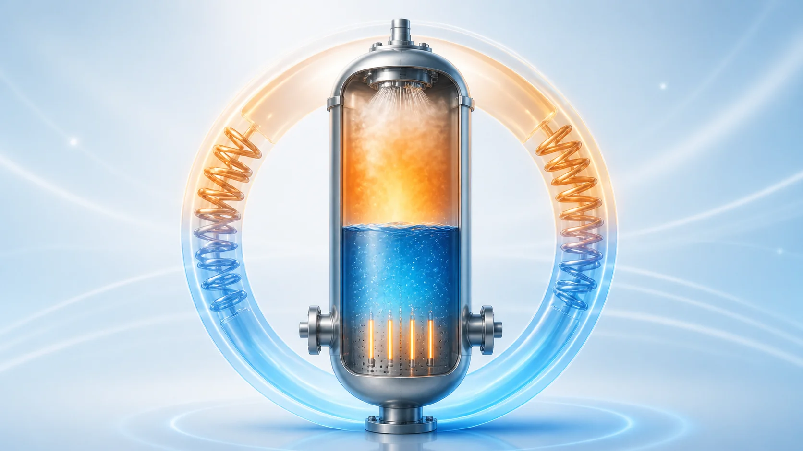
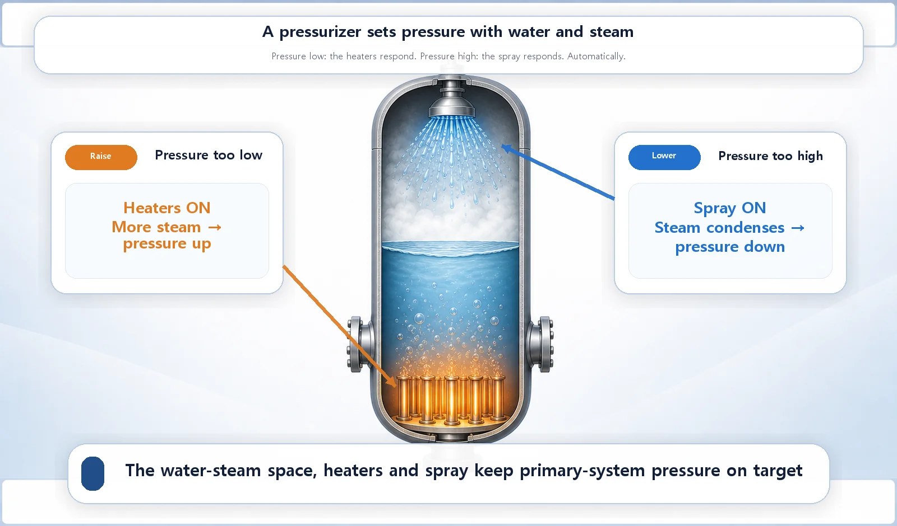
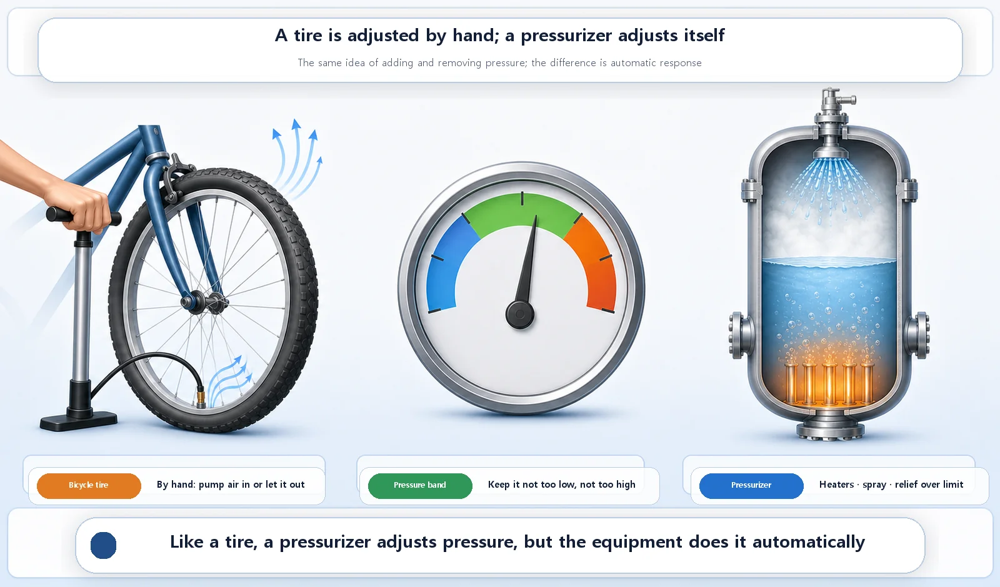

Reactor Components · 062
Pumping Up the Tires of a Nuclear Plant — How the Pressurizer Controls Pressure
Heaters add steam when pressure falls, spray condenses it when pressure rises, and safety valves guard the limit.

A pressure vessel withstands pressure; a pressurizer creates and adjusts it. This separate vessel on the primary system holds water and steam together. Heaters at the bottom make more steam when pressure falls, and spray at the top condenses steam when pressure rises, keeping the whole primary system within a narrow pressure range automatically.
Air in, air out
Ever pumped up a bicycle tire? Push more air in and the tire firms up as the pressure rises. Let a little air out and the pressure drops. Simple enough. Now, would you believe that a nuclear power plant has a device that does much the same thing, nudging pressure up and down to keep it precisely where it should be?
The reactor pressure vessel is the sturdy container that withstands high pressure. The pressurizer, our subject today, is the device that creates and adjusts that pressure to the value the plant wants in the first place. Withstanding pressure and controlling it are two different jobs.
The pressurizer: a small room that makes pressure
The primary system of a pressurized water reactor keeps its coolant (water) at very high pressure, so the water stays liquid at temperatures far above its normal boiling point. The pressurizer is a separate pressure vessel connected to the primary-system piping. Inside, it holds a small space where water and steam exist together, and it uses that space to hold and adjust the pressure of the entire primary system at the desired value.
Down at the bottom of the pressurizer are electric heaters; up at the top is a spray system that showers water. When pressure falls, the heaters boil more water, adding steam and raising the pressure. When pressure climbs, cooler water is sprayed in, condensing some of the steam back into water and lowering the pressure. It is the same principle as putting air into a bicycle tire or letting it out. The difference is that nobody does this by hand: the pressurizer responds automatically as the pressure changes.

| Situation | What switches on | What happens to the steam | Pressure |
|---|---|---|---|
| Pressure too low | Heaters (bottom) | More water boils, more steam | Rises |
| Pressure too high | Spray (top) | Some steam condenses back to water | Falls |
| Above the design limit | Safety valves | Steam is released | Kept from reaching a dangerous level |
Why pressure control matters
If primary-system pressure drops too low, the hot coolant risks boiling at a lower temperature than expected. If the pressure climbs too high, excessive force can be placed on the piping and equipment. During operation, natural pressure swings happen all the time, for example as the water's volume changes slightly with temperature. The pressurizer absorbs those swings and keeps primary-system pressure stable within a narrow range.
It also has a safety function. If pressure tries to exceed the design limit, safety valves on the pressurizer release steam so the pressure cannot rise to a dangerous level.

Easy mix-ups
The pressurizer and the pressure vessel are different devices. The pressure vessel holds the core and withstands high pressure. The pressurizer is a separate device that creates and adjusts that pressure to the target value. Without a pressurizer, no matter how strong the pressure vessel is, there would be no way to set the pressure at the right level or fine-tune it.
The pressurizer and the steam generator do different jobs, too. The steam generator is a heat exchanger that passes heat to the secondary system. The pressurizer controls the pressure of the primary system itself. Both look like big metal vessels attached to the primary system, but what they do is completely different.
The short version
The pressurizer is a separate vessel on the primary system that uses a space holding both water and steam to keep pressure at the desired value. When pressure is low, the heaters make more steam; when it is high, the spray turns steam back into water. If the pressure vessel is the container that withstands pressure, the pressurizer is the device that creates and adjusts it, automatically, the way you would pump air into a tire or let it out.
Next comes the muscle that actually drives this hot water around the system: the reactor coolant pump.